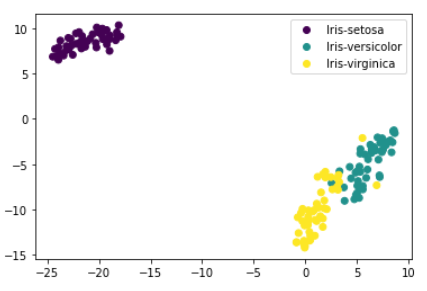

Unsupervised Machine Learning
Unsupervised machine learning uses machine learning algorithms to analyze and cluster unlabeled datasets. These algorithms discover hidden patterns or data groupings without the need for human interventionFor each of the following machine learning models, all of the code and datasets can be found here:
Elbow Method: Number of Clusters
A fundamental step for any unsupervised algorithm is to determine the optimal number of clusters into which the data may be clustered. The Elbow Method is one of the most popular methods to determine this optimal value of k. We now demonstrate the given method using the K-Means clustering technique using the Sklearn library of python. Although it isn't necessary in this situation (because we already know that there are 3 species already) it is nice to know how to do it if you didn't know the amount of cluster groups.

Principle Component Analysis
Principal Component Analysis (PCA) is a linear dimensionality reduction technique that can be utilized for extracting information from a high-dimensional space by projecting it into a lower-dimensional sub-space.
T-Distributed Stochastic Neighbor
T-distributed neighbor embedding (t-SNE) is a dimensionality reduction technique that helps users visualize high-dimensional data sets. It takes the original data that is entered into the algorithm and matches both distributions to determine how to best represent this data using fewer dimensions. t-SNE is another dimensionality reduction algorithm but unlike PCA is able to account for non-linear relationships
K-Nearest Neighbors
Now we need to determine how many surrrounding points are references when predicting a new data point. Now we need to determine how many surrrounding points are references when predicting a new data point. Choosing a small value of K leads to unstable decision boundaries. The substantial K value is better for classification as it leads to smoothening the decision boundaries. We want to choose a k-value whose error is low.